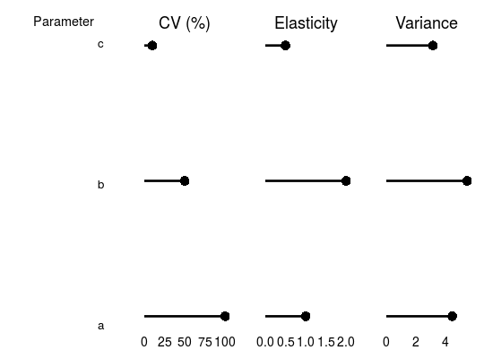

Usage
"plot"(plot.inputs, fontsize = list(title = 18, axis = 14))
Arguments
- fontsize
- list specifying the font size of the titles and axes of the graph
- ...
- Output from any number of sensitivity analyses. Output must be of the form
given by sensitivity.results$variance.decomposition.output in model output
- all.plot.inputs
- Optional argument allowing output from sensitivity analyses to be specified in a list
- exclude
- vector of strings specifying parameters to omit from the variance decomposition graph
- convert.var
- function transforming variances to the value displayed in the graph
- var.label
- label to displayed over variance column
- order.plot.input
- Output from a sensitivity analysis that is to be used to order parameters.
Parameters are ordered by variance. Defaults to the first sensitivity analysis output given
- ticks.plot.input
- Output from a sensitivity analysis that is to be used.
Defaults to the first sensitivity analysis output given
- col
- Color of each sensitivity analysis. Equivalent to col parameter of the plot function.
- pch
- Shape of each sensitivity analysis. Equivalent to pch parameter of the plot function.
- main
- Plot title. Useful for multi-pft variance decompositions.
Description
Plot results of variance decomposition
Details
Plots variance decomposition tryptich
Examples
x <- list(trait.labels = c("a", "b", "c"),
coef.vars = c(a=1,b=0.5, c=0.1),
elasticities = c(a=1,b=2,c=0.5),
variances = c(a = 20, b=30, c = 10))
do.call(grid.arrange, c(plot.variance.decomposition(x), ncol = 4))
